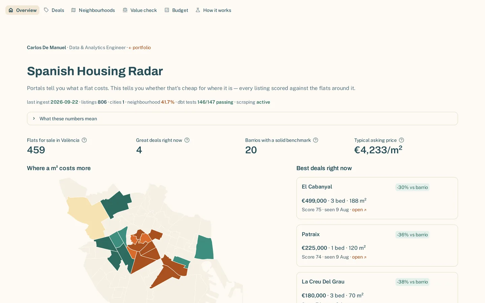
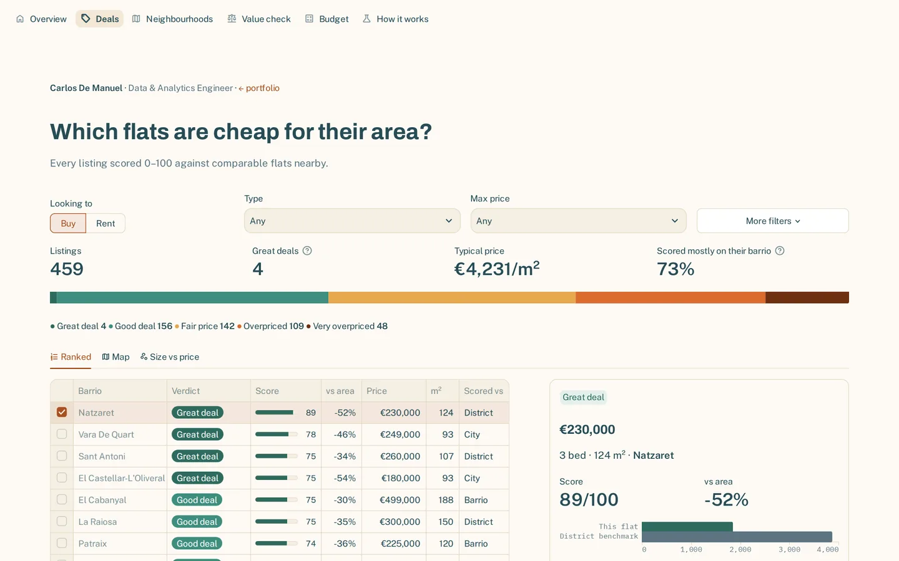

Spanish Housing Radar
Finding under-priced property listings with a benchmark-driven Opportunity Score — and being honest about which benchmark actually scored each listing.
Live pipeline state
Static snapshot verified 25 Sep 2026 — dbt test counts read from each project’s manifest.json. Both projects publish a run summary after every pipeline run, and it replaces these figures when it loads.
- last ingest
- —
- rows in warehouse
- —
- dbt tests passing
- 162 / 162
- last CI run
- —

Listings and scores change with every weekly run, so they live in the app (opens in a new tab). This page is about why it is built the way it is.
The problem
A flat is only cheap compared with the right peers — same neighbourhood, same type — not a city-wide average. The pipeline scrapes listings every week and scores each one against its local benchmark, so a good deal is quantified, not a gut feeling.
The hard part is honesty. Spanish listings are sparse at barrio level, and a flat compared only with its own barrio is often compared with itself. So the real work is deciding which benchmark a listing has earned — and telling the user which one it got.
Architecture
Streamlit · Altair · pydeck maps · dbt Core 1.9 · 19 models, 162 data tests, 3 sources · every PR validated against an isolated CI schema, so a change to the scoring can't silently break production data
Key decisions
- A barrio is trusted as far as its data earns. The score used to switch at a fixed cut-off: 8 listings and the barrio counted in full, 7 and not at all. Measured, a barrio of 8 deserves about 57% weight. The benchmark now starts from the district and the barrio pulls it by an empirical-Bayes weight, estimated in SQL on every build.
- Outliers set aside, in the open. A one-bedroom rent listed at 707 m² — a typo for 70 — was once the top “great deal”. Listings far outside their city's €/m² range, or unseen for two months, now stay out of every benchmark, and the app lists what it removed.
- Neutral, not extreme, on a thin benchmark. One comparable means zero spread, which would divide to infinity and snap the score to its maximum. That case scores 0, so a thin benchmark can't manufacture a fake bargain.
-- how far to trust a barrio: within- over between-barrio variance
case when n_barrios >= {{ min_barrios }} and between_var > 0
then within_var / between_var end as shrinkage_k,
-- the barrio pulls its district's median by n / (n + k)
barrio_weight * barrio_median_ppsqm
+ (1 - barrio_weight) * parent_median_ppsqm as benchmark_median_ppsqm,
-- ...then a clamped z-score, neutral when dispersion is zero
round(greatest(-3.0, least(3.0,
coalesce((price_per_sqm - benchmark_median_ppsqm)
/ nullif(benchmark_stddev_ppsqm, 0), 0)
)), 3) as ppsqm_z_score
Limits
- One city. València only, sale and rent, weekly, inside Scrapfly's free credits — depth in one market rather than breadth.
- Caught by its own checks. A data-currency test found the INE price index frozen after INE rebased it; a regression test found closing costs charged twice; a CI rebuild showed a full refresh would have wiped the history. Each is now guarded.
- Next time. Measure how far to trust a barrio from day one, instead of picking a cut-off.